Datum: 27. 3. 2026 | Verze: 1.0.0 | Testovano jako: admin (ZBM9000)
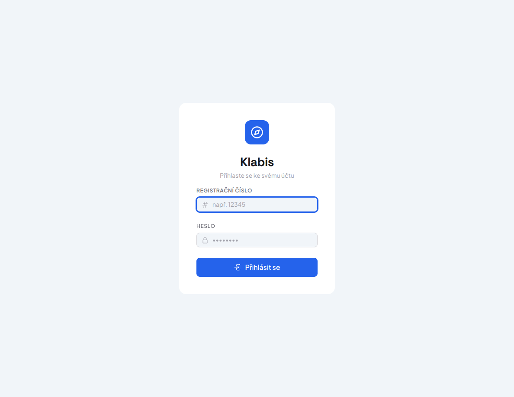
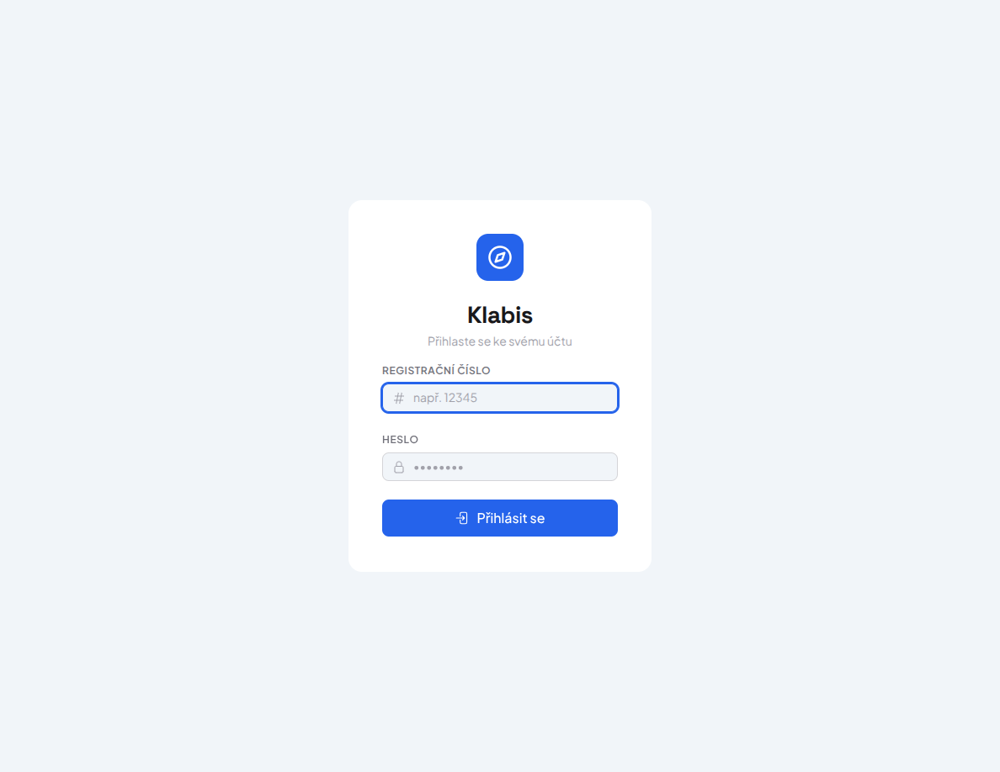
| Kriterium | Hodnoceni | Komentar |
|---|---|---|
| Design Quality | 2 | Ciste, vycentrovane, koherentni barevne schema (modra/bila). Logo a ikony dobre ladene. |
| Originality | 3 | Solidni, ale pomerne standardni login formular. Ikony u poli jsou hezky detail. |
| Craft | 2 | Dobra typograficka hierarchie, konzistentni spacing, zaoblene rohy. |
| Functionality | 2 | Jasne viditelna akce, placeholder napoveda. Ale: chybovy stav (URL ?error) nema zadnou vizualni chybovou zpravu - uzivatel nevi ze se prihlaseni nezdarilo. |
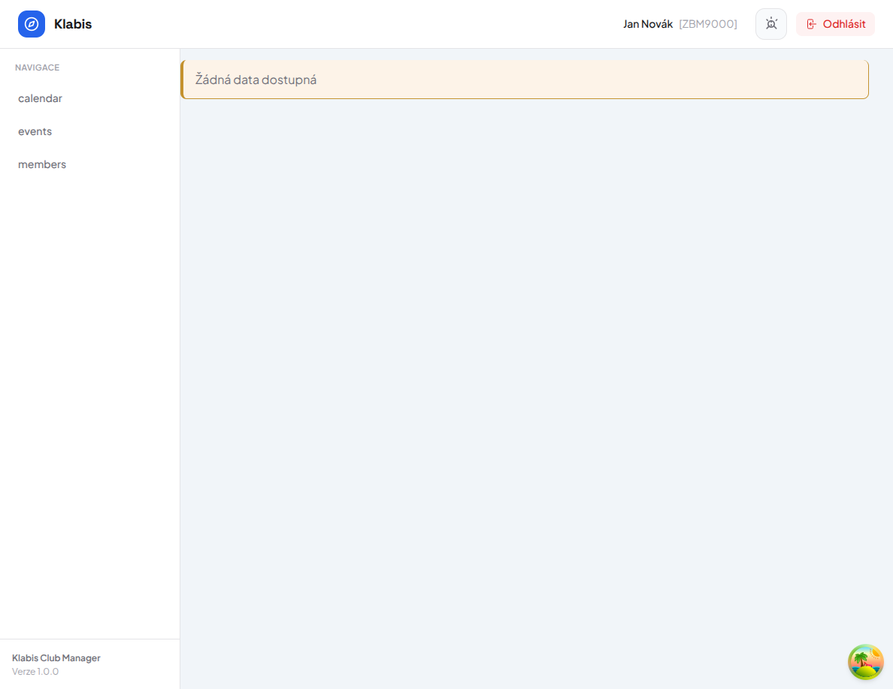
| Kriterium | Hodnoceni | Komentar |
|---|---|---|
| Design Quality | 4 | Prazdna stranka s upozornenim "Zadna data dostupna" - nepusobi jako dashboard. Vizualne prazdna. |
| Originality | 5 | Zadny obsah, zadny design. Chybi welcome message, navigacni karty, statistiky. |
| Craft | 3 | Layout (header, sidebar, main) je ciste strukturovany, ale prazdny obsah znaci nedokonceni. |
| Functionality | 4 | Navigacni menu pouziva anglicke nazvy (calendar, events, members) misto ceskych. Chybi navigacni ikony. Dashboard neplni svuj ucel. |
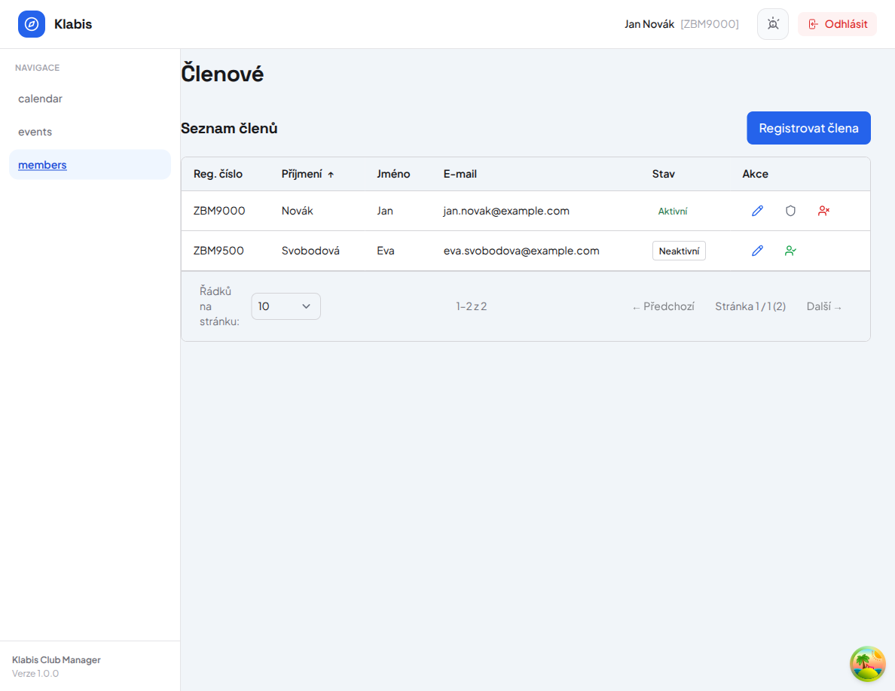
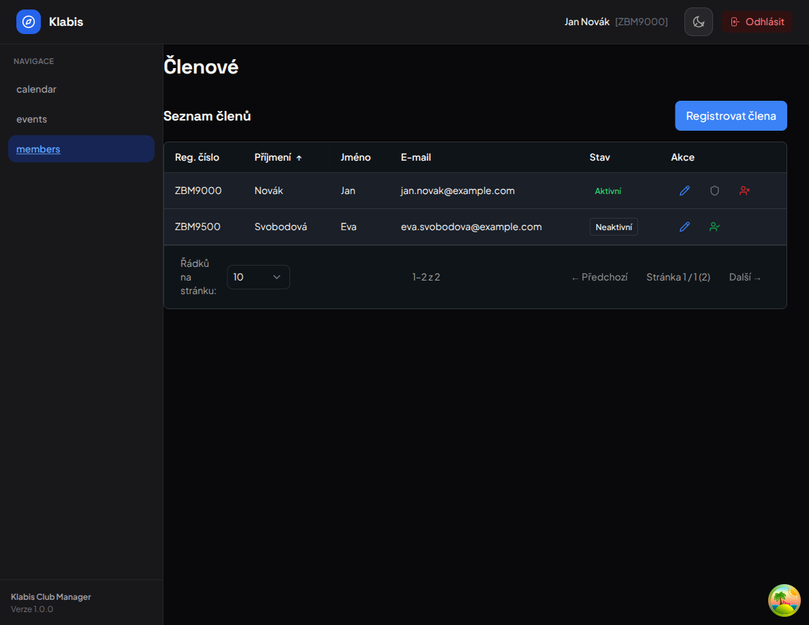
| Kriterium | Hodnoceni | Komentar |
|---|---|---|
| Design Quality | 2 | Cista tabulka s jasnou hierarchii. Status badges (Aktivni/Neaktivni) dobre vizualne odlisene. Dobre funguje dark mode. |
| Originality | 3 | Standardni tabulkovy design, ale dobre provedeny. Akce jako ikonove tlacitka jsou uspornejsi nez textove. |
| Craft | 2 | Konzistentni spacing, radkovani, sortovatelne sloupce, strank. Dark mode funguje spravne. |
| Functionality | 2 | Sortovani, strankovani, akce v radku, CTA tlacitko "Registrovat clena" jasne viditelne. Ikonova tlacitka akcí mohla mit tooltip. |
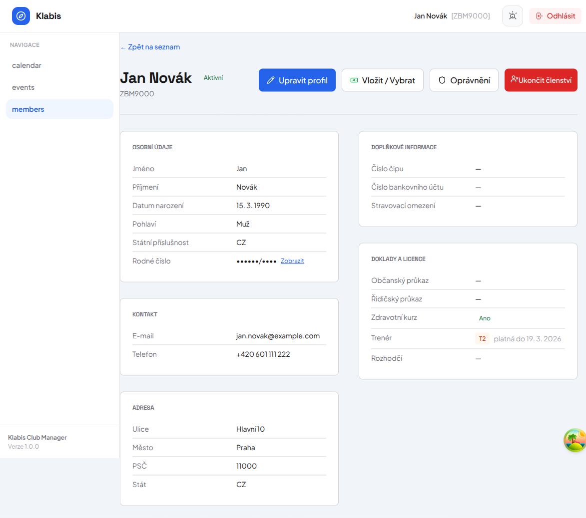
| Kriterium | Hodnoceni | Komentar |
|---|---|---|
| Design Quality | 2 | Dobre organizovane do logickych sekci (Osobni udaje, Kontakt, Adresa, Doklady). Kartove rozlozeni je prehledne. |
| Originality | 2 | Maskovane rodne cislo s tlacitkem "Zobrazit" je promysleny detail. Licence badges (T2) s datem platnosti. |
| Craft | 2 | Definition list (dt/dd) pro prehledne parovani labelu a hodnot. Konzistentni odsazeni. |
| Functionality | 2 | Jasne CTA akce nahore, breadcrumb zpet. Tlacitko "Ukoncit clenstvi" spravne cervene. |
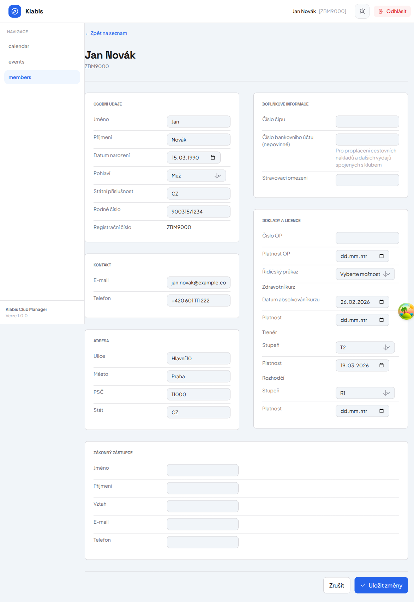
| Kriterium | Hodnoceni | Komentar |
|---|---|---|
| Design Quality | 2 | Inline editace primo na detailu - plynuly prechod. Zachovava kartove rozlozeni. |
| Originality | 2 | Inline editace misto modalniho formulare je promysleny pristup. Registracni cislo je read-only - spravne. |
| Craft | 2 | Inputy konzistentni sirky, selectboxy se sipkou, datumove pole s nativni ikonou. |
| Functionality | 2 | Sticky footer s "Zrusit"/"Ulozit zmeny". Napoveda u bankovniho uctu. Logicke seskupeni poli. |
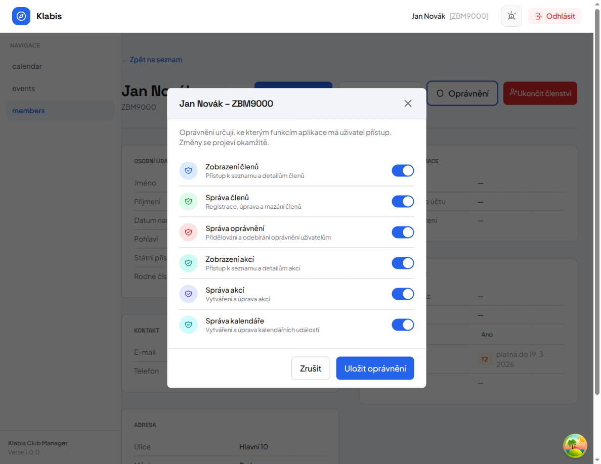
| Kriterium | Hodnoceni | Komentar |
|---|---|---|
| Design Quality | 1 | Vyborna vizualni hierarchie - ikony, nazev, popis, toggle switch. Barevne rozliseni ikon podle typu opravneni. |
| Originality | 2 | Barevne kodovani ikon (zelena=zobrazeni, modra=sprava, cervena=opravneni) je promyslene. |
| Craft | 2 | Konzistentni rozestupy, ciste toggle switche, jasny CTA. |
| Functionality | 2 | Jasny uvodní text, kazde opravneni ma popis. "Zmeny se projevi okamzite" je uzitecna informace. |
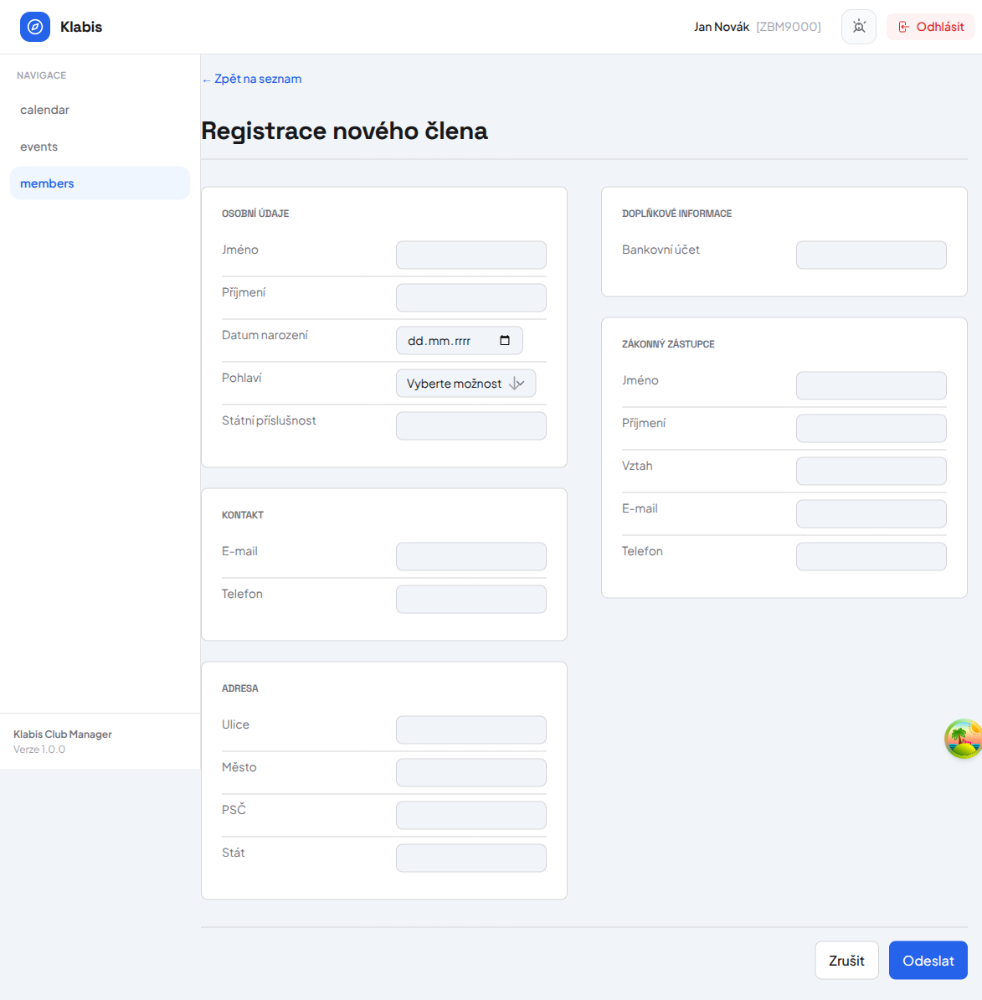
| Kriterium | Hodnoceni | Komentar |
|---|---|---|
| Design Quality | 2 | Konzistentni s editacnim formularem. Dve sloupce logicky oddeluji hlavni a doplnkove udaje. |
| Originality | 3 | Standardni formular, ale dobre strukturovany. |
| Craft | 2 | Stejne vizualni jazyk jako zbytek aplikace. |
| Functionality | 2 | Breadcrumb zpet, jasne CTA "Odeslat"/"Zrusit" dole. |
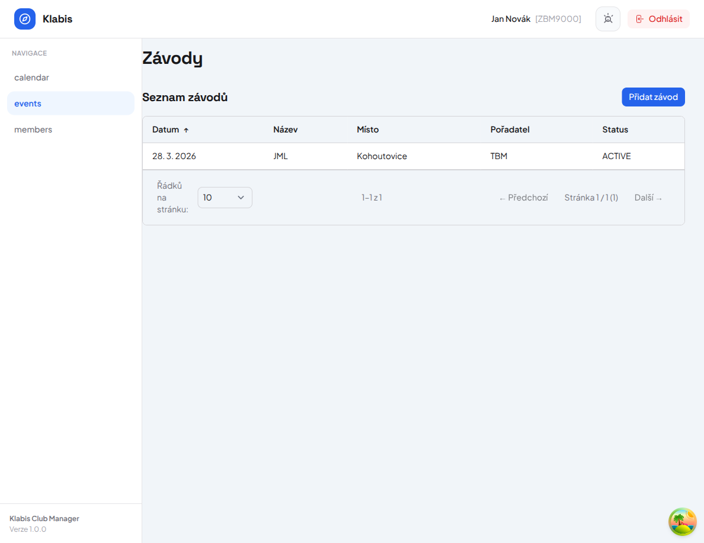
| Kriterium | Hodnoceni | Komentar |
|---|---|---|
| Design Quality | 2 | Konzistentni s tabulkou clenu. Ciste rozlozeni. |
| Originality | 3 | Standardni tabulkovy pohled. |
| Craft | 2 | Sortovani, strankovani - konzistentni s cleny. |
| Functionality | 2 | "Pridat zavod" CTA dobre viditelne. Kliknuti na radek otevre detail. |
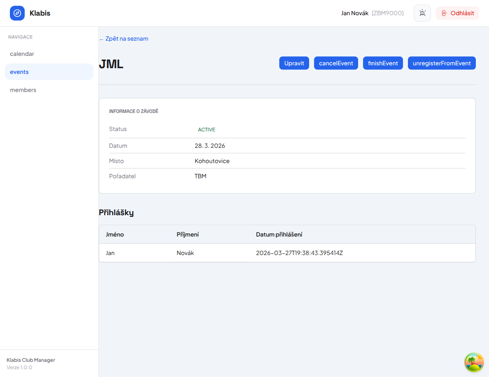
| Kriterium | Hodnoceni | Komentar |
|---|---|---|
| Design Quality | 3 | Zakladni layout OK, ale akcni tlacitka (cancelEvent, finishEvent, unregisterFromEvent) jsou anglicke camelCase nazvy - pusobi nedokoncene. |
| Originality | 4 | Genericke zobrazeni dat bez vlastniho designu. Tlacitka pusobi jako automaticky generovane z API. |
| Craft | 4 | Datum prihlaseni je v surovem ISO formatu (2026-03-27T19:38:43.395414Z). CamelCase nazvy tlacitek. |
| Functionality | 4 | Tlacitka s nazvy jako "cancelEvent" a "finishEvent" jsou pro uzivatele nesrozumitelne. Status "ACTIVE" je anglicky. |
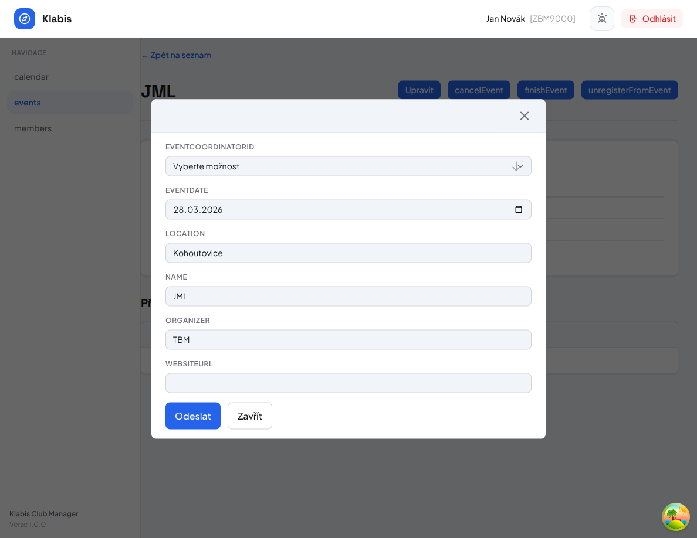
| Kriterium | Hodnoceni | Komentar |
|---|---|---|
| Design Quality | 4 | Genericke zobrazeni formulare. Labely jsou anglicke camelCase nazvy z API (EVENTCOORDINATORID, EVENTDATE, WEBSITEURL). |
| Originality | 5 | Jasne automaticky generovany formular z HAL+FORMS template bez jakekoli customizace. |
| Craft | 4 | Inputy maji sedive pozadi (nekonzistentni se zbytkem). Labely jsou uppercase camelCase - neladna kombinace. |
| Functionality | 3 | Formular funguje, ale labely jsou nesrozumitelne. Select "Vyberte moznost" s "Nacitani..." chyba. |
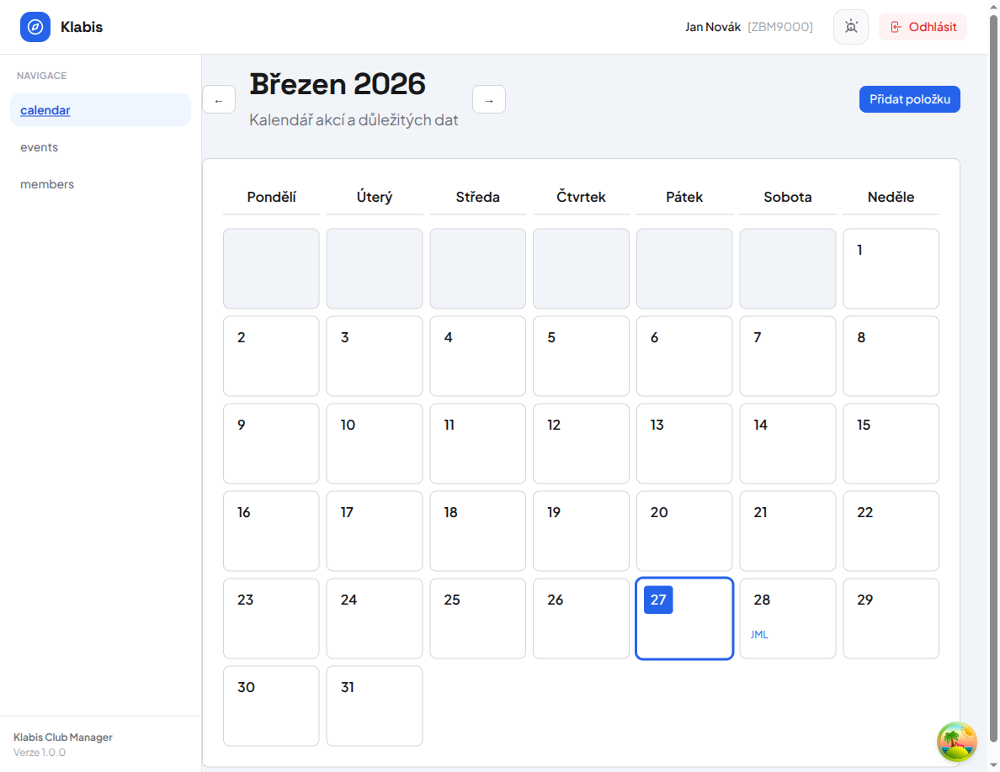
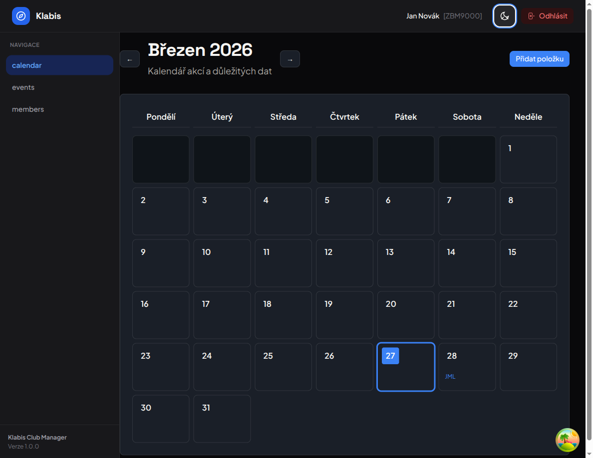
| Kriterium | Hodnoceni | Komentar |
|---|---|---|
| Design Quality | 2 | Klasicky mesicni kalendar s ciste vizualni mrizi. Dnesni den zvyraznen modrym rameckem. Udalosti zobrazeny jako male linky. |
| Originality | 2 | Custom kalendar (ne knihovni). Navigace sipkami, mesicni pohled. Konzistentni v obou tematech. |
| Craft | 2 | Mrizka je rovnomerne rozlozena, dny tydle oznaceny. Dark mode funguje spravne. |
| Functionality | 2 | Navigace mesici, kliknuti na udalost. CTA "Pridat polozku". |
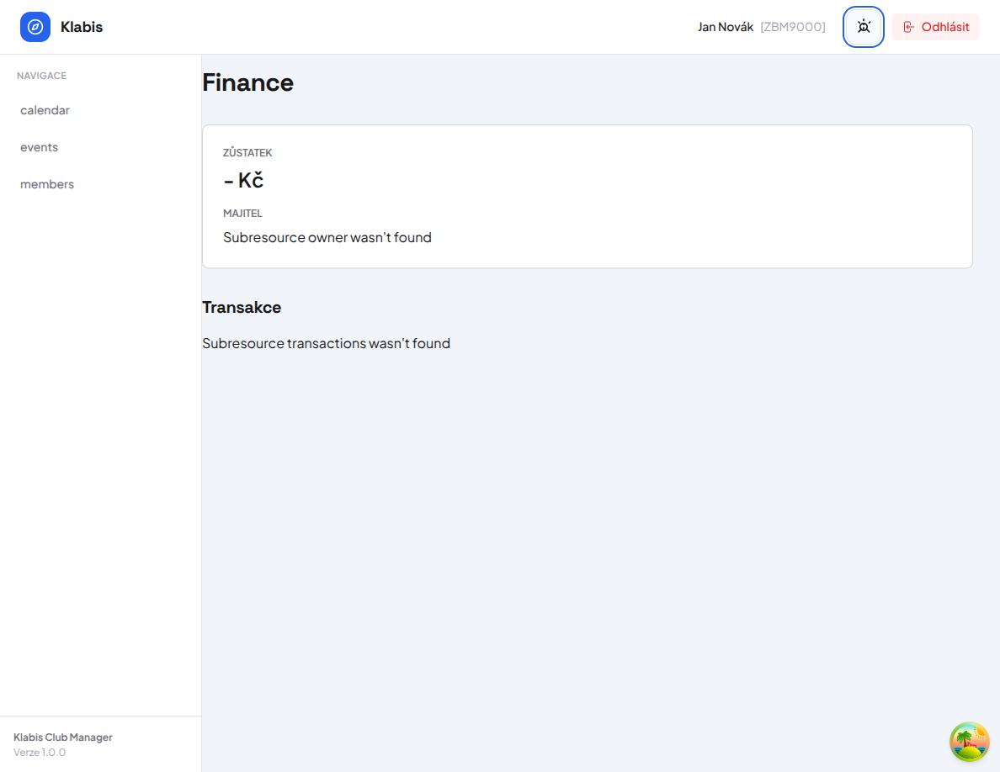
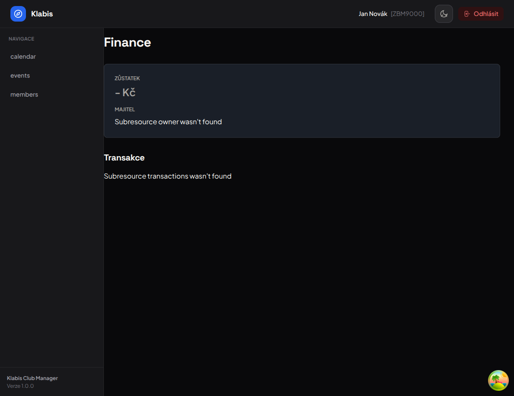
| Kriterium | Hodnoceni | Komentar |
|---|---|---|
| Design Quality | 4 | Minimalni obsah. Zustatek "- Kc" (pomlcka misto cisla). Chybova hlaska v anglictine. |
| Originality | 4 | Zakladni layout bez designoveho usili. |
| Craft | 4 | Chybove zpravy v anglictine: "Subresource owner wasn't found", "Subresource transactions wasn't found". |
| Functionality | 4 | Stranka je nefunkcni - zobrazuje chyby misto dat. Zustatek ukazuje "- Kc" misto 0 Kc nebo jine realne hodnoty. |